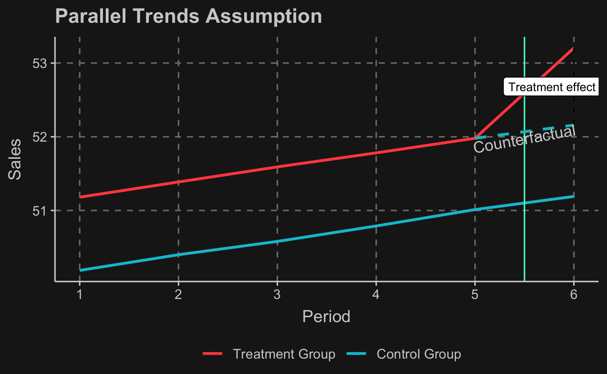
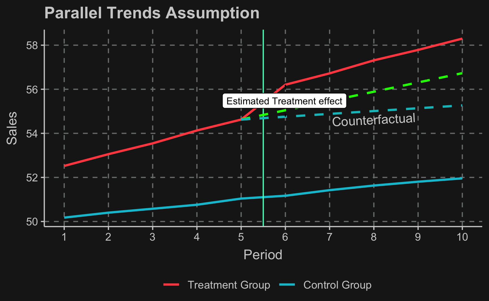

The most popular research design in quantitative and social sciences is the difference-in-differences (DiD) approach. As it name suggests, the method captures differences by observing a treatment and a control group over time to estimate causal average effects.
DiD provides a nonexperimental technique that, in its simplest form, compares two groups (control and treatment) at two points in time (before treatment and after) by observing if and how different both group’s outcome evolve.
By taking two differences, two different kind of biases should be avoided. First, by comparing both groups at both points in time, any external effect that affects the outcome through time should play no role as it affects both groups. Secondly, taking only the difference of change in consideration, selection bias is eliminated and potential outcomes can vary.
As can be seen in the table, the difference in outcome for the treatment group before and after treatment is \(D + T\), while for the control group it is only \(T\). The difference of these two differences then reduces to only \(D\), which is the treatment effect we want to estimate.
Opposed to methods where we just know one outcome - the “after” outcome, regardless of whether a unit received or did not receive treatment - we do not have to assume that the potential otucomes \(E[Y_0|D=1] = E[Y_0|D=1]\) are equal. That is a big difference, because do not have to assume that observation units are similar in all their characteristics.
Instead DiD hinges on a different assumption, the parallel trends assumption. It says that, in absence of treatment for both groups, they would be expected to evolve similarly over time. In other words, we do not expect the potential outcome to be similar, but the change of outcomes from before to after. It implies that there is no other factor that has only an impact on just one of the groups. If units differ in characteristics, they are only allowed to have a constant effect. If the effect varies with time, the paralell trends assumption is violated.
Application
To understand DiD and the parallel trends assumption becomes easier when using plots. Therefore, we will now use an application to go through all steps from stating assumptions to estimation. We create two scenarios:
Scenario A: parallel trends assumption fulfilled
Scenario B: parallel trends assumption violated
Let’s imagine, you are manager of a company that has two stores, one of them being in City 1 and the other being in City 2. You want to test the effectiveness of a local ad campaign on sales. Therefore, you will run a campaign at the store in City 1 but not in City 2 and keep track of sales in the periods before and after the treatment.
We generate a data set for two scenarios according to the following relationships:
Scenario A:
\(Y = D + P + X + U_y\)
Scenario B:
\(X = S + U_x\)
\(Y = D + P + X + XP + U_y\)
\(Y\) - sales
\(D\) true treatment effect
\(P\) is periods
\(S\) store index
\(X\) covariate, e.g. ecosystem
\(U_y, U_x\) error terms
With the function generate_data() we generate data with arbitrary values for the number of stores, number of observed periods, the size of the true treatment effect, the timing of treatment and level of noise in the data generating process. Data is generated for both scenarios as can be seen at the suffixes.
── Conflicts ──────────────────────────────────────────────────────────────────────────────────────────────────────────────── tidyverse_conflicts() ──
x dplyr::filter() masks stats::filter()
x dplyr::lag() masks stats::lag()
generate_data <-function(S =2, # number of groupsP =10, # number of periodsD_size =1, # effect of treatmentD_time =NULL, # time of treatmenty_0 =50, # base value for ysd =1# standard deviations for randomly generated sequences){# create group period dyads s <-rep(0:1, each = P) p <-rep(1:P, S)# timing and size of treatment (effect) D <- D_sizeif (missing(D_time)) D_time <- P/2 after <-as.numeric(ifelse(p, p > D_time))# create relation between independent variables and treatment (actually# other way round, but easier to simulate this way) x1 <-rnorm(S*P, s, sd)# create dependent variable ...# ... for scenario (a) y_a <- y_0 + D*s*after +1/5*p + x1 +rnorm(S*P, 0, sd)# ... for scenario (b) y_b <- y_0 + D*s*after +1/5*p + x1 + s*x1 +1/3*p*x1 +rnorm(S*P, 0, sd)# add variables to table df <-tibble(store = s,period = p,after = after,x1 = x1,sales_a = y_a,sales_b = y_b )# return tablereturn(df)}
We choose to generate a data set with a true treatment effect of 1 and 10 observed periods. For now, we just have one store as a treated unit and one store as a non-treated unit. Later, we will extend it to a larger number of stores per group, but for demonstration purpose, we restrict it to two stores, initially. We have 10 periods with 5 periods before and 5 after treatment. Lastly, we add a little bit of noise.
# Generate one sampleP <-10# number of periodsD <-1# true treatment effectdf <-generate_data(P = P, D_size = D, sd =0.01)
Parallel trends
Scenario A
To compute an estimated treatment effect, we filter the data to the two periods just around treatment and implement the formulas as in the introduction. Not surprisingly, we get an estimate that is very close to our true treatment effect.
# [1.1.1] (a) Fulfillment ----# Scenario (a)# Only show last data point before and first data point after treatment.df_zoom_in_a <- df %>%filter(period %in% (P/2):(P/2+1)) %>%mutate(store_discrete =as.factor(store)) %>%rename(sales = sales_a)# Manually compute differences# Difference between treatment and control group BEFORE treatmentbefore_control_a <- df_zoom_in_a %>%filter(store ==0, after ==0) %>%pull(sales)before_treatment_a <- df_zoom_in_a %>%filter(store ==1, after ==0) %>%pull(sales)diff_before_a <- before_treatment_a - before_control_a# Difference between treatment and control group AFTER treatmentafter_control_a <- df_zoom_in_a %>%filter(store ==0, after ==1) %>%pull(sales)after_treatment_a <- df_zoom_in_a %>%filter(store ==1, after ==1) %>%pull(sales)diff_after_a <- after_treatment_a - after_control_a# Difference-in-differences. Unbiased estimate if parallel trends is correctly# assumed and there is no hidden confounding. Estimate may vary from true# treatment effect, as we also include some noise in the data generating # process.diff_diff_a <- diff_after_a - diff_before_asprintf("Estimate: %.2f, True Effect: %.2f", diff_diff_a, D)
[1] "Estimate: 1.05, True Effect: 1.00"
Looking at the last period before and the first period after treatment, the impact of treatment can clearly be seen. The dashed line represents the counterfactual value for the treated group, i.e. the value it would have if it had not been treated. This value is not observed, but by the paralell trends assumptions, it would have developed like the value for the untreated group.
Repeating the steps for scenario B yields an unexpected result. The estimated treatment effect is different from what we would have expected.
# [1.1.2] (b) Violation ----# Scenario (b)# Only show last data point before and first data point after treatment.df_zoom_in_b <- df %>%filter(period %in% (P/2):(P/2+1)) %>%mutate(store_discrete =as.factor(store)) %>%rename(sales = sales_b)# Manually compute differences# Difference between treatment and control group BEFORE treatmentbefore_control_b <- df_zoom_in_b %>%filter(store ==0, after ==0) %>%pull(sales)before_treatment_b <- df_zoom_in_b %>%filter(store ==1, after ==0) %>%pull(sales)diff_before_b <- before_treatment_b - before_control_b# Difference between treatment and control group AFTER treatmentafter_control_b <- df_zoom_in_b %>%filter(store ==0, after ==1) %>%pull(sales)after_treatment_b <- df_zoom_in_b %>%filter(store ==1, after ==1) %>%pull(sales)diff_after_b <- after_treatment_b - after_control_b# Difference-in-differences. Unbiased estimate if parallel trends is correctly# assumed and there is no hidden confounding. Estimate varies from true# treatment effect due to confounding and added noise.diff_diff_b <- diff_after_b - diff_before_bsprintf("Estimate: %.2f, True Effect: %.2f", diff_diff_b, D)
[1] "Estimate: 1.45, True Effect: 1.00"
Again, the picture is very similar. Having only four data points, treatment before and after and control before and after, there is no way to test the paralell trends assumption which leaves room for doubt. So how can we check whether we made a mistake or the paralell trends assumption is violated?
Many researchers therefore try to increase the validity of their results by providing an event study. Not surprisingly (as we created the data ourselves), both groups develop same before the treatment. It cannot rule out all unobserved behavior but an event study lends credibility to the causal interpretation of treatment effects.
# [1.2.1] (a) Fulfillment ----# Zoom out and show that parallel trend assumption is fulfilled in scenario (a)df_zoom_out_a <- df %>%mutate(store_discrete =as.factor(store)) %>%filter(period <= (P/2+1)) %>%rename(sales = sales_a)diff_control <- after_control_a - before_control_aggplot(df_zoom_out_a, aes(x = period, y = sales, color = store_discrete)) +geom_line(size = .95) +scale_x_continuous(name ="Period", breaks =1:(P/2+1)) +scale_y_continuous(name ="Sales") +scale_color_discrete(labels =c("Control Group", "Treatment Group")) +guides(colour =guide_legend(reverse = T)) +geom_vline(xintercept = P/2+ .5, color = ggthemr::swatch()[4]) +annotate(geom ="segment", x = (P/2),xend = (P/2+1),y = before_treatment_a,yend = before_treatment_a +1*(diff_control),linetype ="dashed", color ="#00bfc4", size = .95) +annotate(geom ="segment", x = (P/2+1), xend = (P/2+1),y = after_treatment_a, yend = after_treatment_a - diff_diff_a,linetype ="dashed", color ="black") +annotate(geom ="label", x = (P/2+.78), y = after_treatment_a - (diff_diff_a /2), label ="Treatment effect", size =3) +annotate(geom ="text", x = (P/2) + .5, y = before_control_a +1.1*diff_before_a - .1, label ="Counterfactual", size =4, angle =atan(after_control_a - before_control_a) *180/pi) +theme(panel.grid.minor.x =element_blank(),legend.title =element_blank(), legend.position ="bottom") +ggtitle("Parallel Trends Assumption")

Scenario B
Performing the same steps for scenario B, you see the usefulness of an event study. Other than in scenario A, the paralell trends assumption does not seem to hold. It can be seen from the plot, that the estimated treatment effect is larger than the actual treatment effect. This is due to different trends in both groups. The treatment group has a more positive trend even without treatment and the groups would have further diverged after treatment (see green line). Some of the increase in sales after treatment is therefore attributable to this trends but not the treatment effect.
# [1.2.2] (b) Violation----# Zoom out and show that parallel trend assumption is violated in scenario (b)df_zoom_out_b <- df %>%mutate(store_discrete =as.factor(store)) %>%#filter(period <= (P/2 + 1)) %>% rename(sales = sales_b)treatment_period_1 <- df_zoom_out_b %>%filter(store ==1, period ==1) %>%pull(sales)treatment_period_5 <- df_zoom_out_b %>%filter(store ==1, period == P/2) %>%pull(sales)diff_treatment <- (treatment_period_5 - treatment_period_1) / (P/2)ggplot(df_zoom_out_b, aes(x = period, y = sales, color = store_discrete)) +geom_line(size = .95) +scale_x_continuous(name ="Period", breaks =1:P) +scale_y_continuous(name ="Sales") +scale_color_discrete(labels =c("Control Group", "Treatment Group")) +guides(colour =guide_legend(reverse = T)) +geom_vline(xintercept = P/2+ .5, color = ggthemr::swatch()[4]) +annotate(geom ="segment", x = (P/2),xend = P,y = before_treatment_b,yend = before_treatment_b + (P/2)*(after_control_b - before_control_b),linetype ="dashed", color ="#00bfc4", size = .95) +annotate(geom ="segment", x = (P/2),xend = P,y = before_treatment_b,yend = before_treatment_b + (P/2)*(diff_treatment),linetype ="dashed", color ="green", size = .95) +annotate(geom ="segment", x = (P/2), xend = (P/2+1),y = before_treatment_b, yend = after_treatment_b - diff_diff_b,linetype ="dashed", color ="#00bfc4", size = .95) +annotate(geom ="segment", x = (P/2+1), xend = (P/2+1),y = after_treatment_b, yend = after_treatment_b - diff_diff_b,linetype ="dashed", color ="black") +annotate(geom ="label", x = (P/2+.98), y = after_treatment_b - (diff_diff_b /2),label ="Estimated Treatment effect", size =3) +annotate(geom ="text", x = (P/2) +3, y = before_control_b +1*diff_before_b,label ="Counterfactual", size =4,#angle = atan(after_control_b - before_control_b) * 180/piangle =3) +theme(panel.grid.minor.x =element_blank(),legend.title =element_blank(), legend.position ="bottom") +ggtitle("Parallel Trends Assumption")

Modeling
A more typical situation is usually that there is more than one unit in the treatment and control group. You could e.g. imagine that you are managing more than two stores and are implementing an ad campaign in a specific region.
To simulate such a scenario, we generate data for 3’000 stores that are split evenly into two regions. In one region, the ad campaign will be run (treatment region) and in the other there will be no campaign (control region). The variable relationships as defined in the previous section still hold.
# [1.4] Linear regression ----# Now assume that there are more than two stores and treatment is performed# e.g. in a specific region which are, depending on scenario (a) and (b) # different.# Generate a bunch of samples and combine in one table. Here, we choose a higher# standard deviation.n_stores <-3e+3df_lm <-lapply(1:n_stores, function(R) generate_data(sd =1)) %>%bind_rows()df_lm <- df_lm %>%filter(period %in% (P/2):(P/2+1))
Scenario A
So how do we compute the average treatment effect? Previously in this chapter, we just used basic math calculations (particularly subtraction). But there is an easier way: we can use regression again. This is because the average treatment effect is the coefficient of the interaction of group and time.
\(Time\) indicates whether the period is before or after the treatment and \(Treatment\) whether an observation was treated or not. Then, the coefficient we are interested in is \(\beta_3\), because its term is only active for the treated group after treatment.
!!! x1: maybe purchase power in region
For scenario A, we can see that there is no need to adjust for the covariate \(x1\). If you check the formulas again, your will notice that \(x1\) has a constant and time-invariant effect on sales and therefore it does not violate the paralell trends assumption.
Including or leaving out \(x1\) in the regression yields the a similar unbiased estimate (close to defined true size) for our variable of interest \(store:after\), the parameter of interest.
# [1.4.1] (a) ----# (a): Due to the construction of the data set, we expect interaction# coefficient to be significant as well as the covariate and period. However, as# the covariate does not have a time-varying effect, it is not a confounder and# interaction coefficient should be unbiased even if not adjusting for the# covariate.summary(lm(sales_a ~ store * after , data = df_lm))
Call:
lm(formula = sales_a ~ store * after, data = df_lm)
Residuals:
Min 1Q Median 3Q Max
-5.177 -0.952 0.003 0.956 6.392
Coefficients:
Estimate Std. Error t value Pr(>|t|)
(Intercept) 50.9620 0.0257 1981.04 < 2e-16 ***
store 1.0367 0.0364 28.50 < 2e-16 ***
after 0.2637 0.0364 7.25 4.5e-13 ***
store:after 0.9816 0.0514 19.08 < 2e-16 ***
---
Signif. codes: 0 '***' 0.001 '**' 0.01 '*' 0.05 '.' 0.1 ' ' 1
Residual standard error: 1.4 on 11996 degrees of freedom
Multiple R-squared: 0.284, Adjusted R-squared: 0.283
F-statistic: 1.58e+03 on 3 and 11996 DF, p-value: <2e-16
summary(lm(sales_a ~ store * after + x1, data = df_lm))
Call:
lm(formula = sales_a ~ store * after + x1, data = df_lm)
Residuals:
Min 1Q Median 3Q Max
-3.947 -0.680 0.001 0.673 4.205
Coefficients:
Estimate Std. Error t value Pr(>|t|)
(Intercept) 50.98165 0.01821 2799.89 <2e-16 ***
store 0.03882 0.02732 1.42 0.16
after 0.22829 0.02575 8.86 <2e-16 ***
x1 0.98742 0.00903 109.32 <2e-16 ***
store:after 0.97851 0.03642 26.87 <2e-16 ***
---
Signif. codes: 0 '***' 0.001 '**' 0.01 '*' 0.05 '.' 0.1 ' ' 1
Residual standard error: 1 on 11995 degrees of freedom
Multiple R-squared: 0.641, Adjusted R-squared: 0.641
F-statistic: 5.36e+03 on 4 and 11995 DF, p-value: <2e-16
Scenario B
In scenario B, the effect of x1 is different because it has a time-varying effect. Therefore it violates the parallel trends assumption, leading to a biased estimate if x1 is not included (e.g. because it is unobserved).
Because we constructed the data set ourselves, we are able to see that the bias in fact is quite large and the treatment effect seems to include the actual treatment effect plus the effect of x1. Even with including \(x1\) and as a main effect and moderator, we cannot fully reconstruct the true treatment effect.
# [1.4.2] (b) ----# (b): Due to the construction of the data set, we expect interaction coefficient# to be significant and accurate only when adjusting for the time-varying effect# of the covariate and main effects for period and covariate.summary(lm(sales_b ~ store*after, data = df))
Call:
lm(formula = sales_b ~ store * after, data = df)
Residuals:
Min 1Q Median 3Q Max
-1.059 -0.419 0.011 0.383 1.050
Coefficients:
Estimate Std. Error t value Pr(>|t|)
(Intercept) 50.591 0.282 179.15 < 2e-16 ***
store 2.985 0.399 7.47 1.3e-06 ***
after 1.006 0.399 2.52 0.02275 *
store:after 2.683 0.565 4.75 0.00022 ***
---
Signif. codes: 0 '***' 0.001 '**' 0.01 '*' 0.05 '.' 0.1 ' ' 1
Residual standard error: 0.63 on 16 degrees of freedom
Multiple R-squared: 0.953, Adjusted R-squared: 0.945
F-statistic: 109 on 3 and 16 DF, p-value: 7.44e-11
summary(lm(sales_b ~ store*after + after*x1 + store*x1, data = df_lm))
Call:
lm(formula = sales_b ~ store * after + after * x1 + store * x1,
data = df_lm)
Residuals:
Min 1Q Median 3Q Max
-4.227 -0.684 0.003 0.683 3.646
Coefficients:
Estimate Std. Error t value Pr(>|t|)
(Intercept) 50.99628 0.01833 2782.65 < 2e-16 ***
store -0.00499 0.03024 -0.16 0.87
after 0.19101 0.02592 7.37 1.8e-13 ***
x1 2.63604 0.01576 167.23 < 2e-16 ***
store:after 0.99312 0.04103 24.21 < 2e-16 ***
after:x1 0.35500 0.01819 19.52 < 2e-16 ***
store:x1 1.03268 0.01819 56.77 < 2e-16 ***
---
Signif. codes: 0 '***' 0.001 '**' 0.01 '*' 0.05 '.' 0.1 ' ' 1
Residual standard error: 1 on 11993 degrees of freedom
Multiple R-squared: 0.943, Adjusted R-squared: 0.943
F-statistic: 3.31e+04 on 6 and 11993 DF, p-value: <2e-16
Conclusion
DiD is a useful nonexperimental method that relies on the parallel trends assumption which is untestable. We can’t prove it but try to justify it by for example showing prior trends. If both groups were evolving similarly before the treatment, that supports the plausibility and appropriateness of using DiD.
Additionally, there are many extensions to the simple DiD approach we have discussed here like the synthetic control method, that is able to deal with one treated and multiple untreated groups. By matching and weighting the untreated groups, a synthetic group is composed, that is similar in the leadup to the treatment period.
Assignment
Imagine, you are manager of a large health provider that manages many hospitals and you want to test how a new admission procedure affects patient satisfaction.
You randomly selected 18 hospitals that introduced the new method and compare them to 28 other hospitals that did not introduce the method. For both groups of hospitals you collected data from before and after the introduction. The data you have collected is from patient surveys where they were asked how satisfied they are.
Apply the DiD methodology to this application and also account for group and time fixed effects. You can do that by including these as factors into the regression equation.